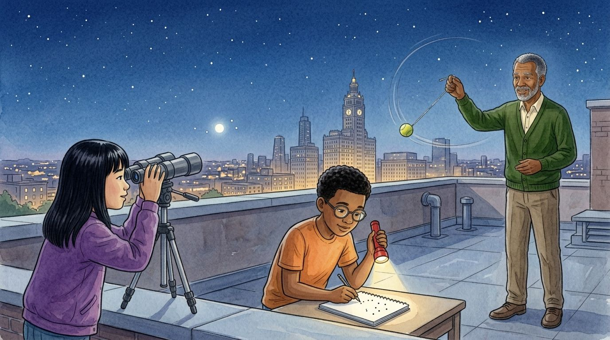

Grade 7 · Science · MS-ESS1-2
The stars that would not stay still
A story about four little lights next to Jupiter, the man who saw them move, and the invisible pull that keeps everything in the sky in its path.
Las estrellas que no se quedaban quietas. Un cuento sobre cuatro lucecitas junto a Júpiter, el hombre que las vio moverse y la fuerza invisible que mantiene todo lo que hay en el cielo en su camino.
Science words you will learn
Tap a green word to see what it means.
Toca una palabra verde para ver qué significa. Con la ayuda activada, verás también la definición en español.
The story
El cuento está en inglés. Pulsa «Listen to the story» para escucharlo y toca las palabras verdes cuando no entiendas una.
Mr. Mensah had permission to take the science club up to the school roof on a clear night. He set a pair of binoculars on a small tripod and pointed it at a very bright dot. "That's Jupiter," he said. Sophia looked first. "There are tiny stars next to it, in a line!"
"You just saw what Galileo saw," said Mr. Mensah. "On January 7, 1610, in Italy, Galileo Galilei pointed his homemade at Jupiter. It made things look about 20 times bigger. Next to the planet, he saw three small points of light that he thought were faraway stars."
"But the next night, they had moved," he went on. "Night after night, Galileo drew their positions. The little lights changed places, sometimes on one side of Jupiter and sometimes on the other, and he found a fourth one. But they always stayed close to Jupiter." Daniel looked up from his notebook, where he was drawing the dots. "Stars don't do that."
"Exactly," said Mr. Mensah. "By January 15, Galileo understood: they were not stars at all. They were , traveling in around Jupiter, the way our Moon travels around Earth." He published his discovery that March. "Back then, many people believed that everything in the sky moved around Earth. Galileo had found four things that clearly did not."
"What keeps the moons going around Jupiter?" asked Sophia. Mr. Mensah took a tennis ball tied to a string and swung it in a circle above his hand. "Galileo didn't know the answer. More than 70 years later, Isaac Newton explained it." "The string pulls the ball toward my hand, so it moves in a circle. In space there's no string. Instead, , the pull between objects with mass, pulls the moons toward Jupiter and keeps them in their orbits."
"If I let go, the ball flies off in a straight line," he said, and he did. Daniel ducked. "Without gravity, the moons would fly off into space too."
"The same force holds our whole together," said Mr. Mensah. "The Sun's gravity keeps Earth and the other planets in their orbits. And gravity holds billions of stars together in our , the Milky Way, which slowly turns around its center." Sophia looked at the faint band of the sky. "So gravity works on everything, from a tennis ball to a galaxy."
Before they went downstairs, everyone took one more look. The four tiny lights were in a slightly different line than an hour before. "We just watched them move," whispered Sophia. "Just like Galileo, but with way better snacks," said Daniel, holding up a bag of popcorn.
Glossary
- telescope
- An instrument with lenses or mirrors that makes faraway objects look closer and brighter.
- telescopio: Un instrumento con lentes o espejos que hace que los objetos lejanos se vean más cerca y más brillantes.
- orbit
- The curved path an object follows around another object in space, like the Moon around Earth.
- órbita: El camino curvo que sigue un objeto alrededor de otro en el espacio, como la Luna alrededor de la Tierra.
- moon
- A natural object that orbits a planet. Jupiter has many moons; Earth has one.
- luna: Un objeto natural que gira alrededor de un planeta. Júpiter tiene muchas lunas; la Tierra tiene una.
- gravity
- The force that pulls objects with mass toward each other. It keeps moons and planets in their orbits.
- gravedad: La fuerza que atrae entre sí a los objetos que tienen masa. Mantiene a las lunas y a los planetas en sus órbitas.
- solar system
- The Sun and everything that orbits it: planets, their moons, asteroids and comets.
- sistema solar: El Sol y todo lo que gira a su alrededor: los planetas, sus lunas, los asteroides y los cometas.
- galaxy
- A huge group of billions of stars, gas and dust held together by gravity. Our galaxy is the Milky Way.
- galaxia: Un enorme grupo de miles de millones de estrellas, gas y polvo que la gravedad mantiene unidos. Nuestra galaxia es la Vía Láctea.
Questions
Choose the correct answer. If you make a mistake, the story shows you where the answer is.
Elige la respuesta correcta. Si te equivocas, el cuento te muestra dónde está la respuesta.
-
Question A. What did Galileo see next to Jupiter on January 7, 1610?
¿Qué vio Galileo junto a Júpiter el 7 de enero de 1610?
Next to Jupiter he saw three small points of light that he thought were faraway stars.
-
Question B. What did the little lights do night after night?
¿Qué hacían las lucecitas noche tras noche?
They changed places, sometimes on one side and sometimes on the other, but always stayed close to Jupiter.
-
Question C. What did Galileo conclude about the little lights?
¿Qué concluyó Galileo sobre las lucecitas?
He understood that they were moons traveling in orbits around Jupiter.
-
Question D. What keeps the moons in their orbits around Jupiter?
¿Qué mantiene a las lunas en sus órbitas alrededor de Júpiter?
Gravity, the pull between objects with mass, pulls the moons toward Jupiter and keeps them in their orbits.
-
Question E. What else does gravity hold together?
¿Qué más mantiene unido la gravedad?
The Sun's gravity keeps the planets in orbit, and gravity holds billions of stars together in the Milky Way.
Challenge: explain your thinking
Use a model
Mr. Mensah used a ball on a string as a model of a moon in orbit. What part of the model stands for gravity? What happened when he let go, and what does that show? Name one way the model is different from a real moon.
Usa un modelo. El Sr. Mensah usó una pelota atada a un cordón como modelo de una luna en órbita. ¿Qué parte del modelo representa la gravedad? ¿Qué pasó cuando soltó el cordón y qué muestra eso? Nombra una diferencia entre el modelo y una luna de verdad.
Answer in your notebook or talk it over with a classmate. Use evidence from the story.
Responde en tu cuaderno o coméntalo con un compañero. Usa evidencia del cuento.
Check your thinking
The string stands for gravity: it pulls the ball toward the center, so the ball moves in a circle. When he let go, the ball flew off in a straight line, which shows that without gravity a moon would fly off into space. One difference: in space nothing is touching the moon; gravity pulls across empty space, without any string.